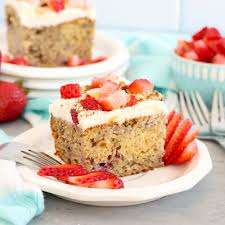

Recipe Information
Preparation time: 25 minutes
Cooking time: 45 minutes
Number of servings: 10 slices
Difficulty level: Beginner
Ingredients
- 3 ripe bananas, mashed
- 1 1/2 cups fresh strawberries, diced
- 2 1/4 cups all-purpose flour
- 1 cup granulated sugar
- 1/2 cup butter (softened)
- 2 large eggs
- 1 tsp vanilla extract
- 1 tsp baking powder
- 1 tsp baking soda
- 1/2 tsp salt
- 1/2 cup milk
- Optional: whipped cream or cream cheese frosting
Instructions
- Preheat oven to 350°F (175°C). Grease and flour a cake pan.
- Cream butter and sugar together in a mixing bowl until light and fluffy.
- Beat in eggs, one at a time, then add vanilla extract.
- Stir in mashed bananas and gently fold in the diced strawberries until well combined.
- In a separate bowl, whisk together flour, baking powder, baking soda, and salt.
- Gradually add dry ingredients to the wet mixture, alternating with milk, mixing until just combined.
- Pour batter into the prepared cake pan and bake for 40–45 minutes, or until a toothpick inserted comes out clean.
- Let cool before serving, then top with whipped cream or cream cheese frosting if desired.
Tips
For extra flavor, fold in 1/2 cup of chopped walnuts or white chocolate chips. To make the cake even more moist, do not overmix the batter after adding flour.
Photo of Strawberry Banana Cake
Nutrition Facts (per slice)
- Calories: 192cal
- Protein: 15g
- Carbohydrates: 55g
- Fat: 5g
- Sugar: 27g
- Sodium: 95mg
- Fiber: 1g